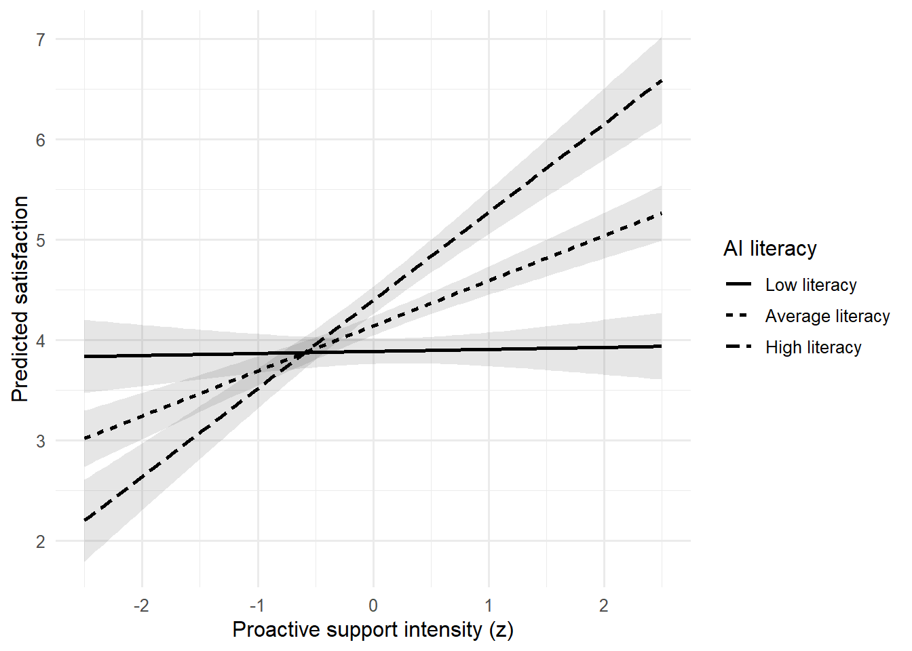
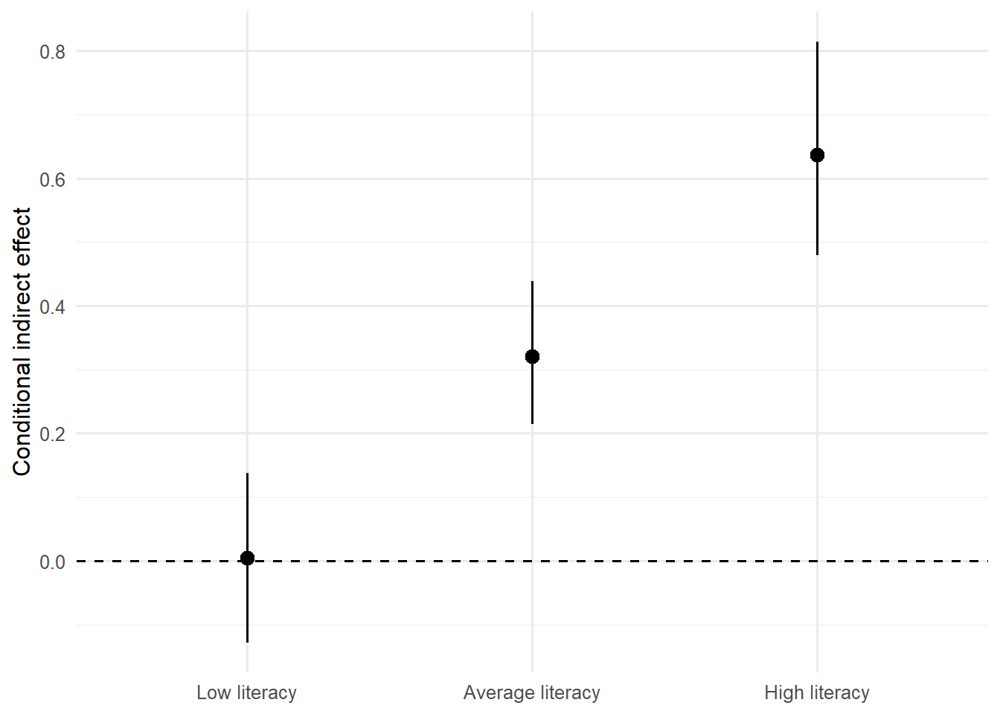

flowchart LR
A["Theory<br>왜·언제 효과가 생기는가?"] --> B["Temporal Order<br>X → M → Y"]
B --> C["Identification<br>무작위화·confounding·selection"]
C --> D["Statistical Model<br>direct·indirect·interaction"]
D --> E["Uncertainty<br>bootstrap·CI"]
E --> F["Sensitivity<br>대안 경로·측정오류"]
F --> G["Claim<br>통계적·인과적 주장 구분"]
메커니즘과 조건부 효과
Mediation, Moderation, and Conditional Process Models
12주차 학습목표
Note
이번 주 학습을 마치면 다음을 할 수 있어야 합니다.
- 매개, 조절, 조절된 매개가 답하는 연구질문을 구분한다.
- mediation의 total, direct, indirect effect를 회귀식과 경로도로 연결한다.
- 간접효과의 유의성 자체와 인과적 메커니즘 주장을 구분한다.
- bootstrap confidence interval이 해결하는 문제와 해결하지 못하는 문제를 설명한다.
- moderation coefficient를 조건부 slope로 해석하고 의미 있는 moderator 값에서 탐색한다.
- 평균중심화와 표준화가 해석 기준을 바꾸지만 interaction을 만들어내지는 않음을 이해한다.
- 조절된 매개에서 conditional indirect effect와 index of moderated mediation를 구분한다.
- cross-sectional, longitudinal, experimental mediation의 증거 수준을 구분한다.
- 측정오류와 반복측정 구조가 mediation 결과에 미치는 영향을 점검한다.
- GenAI를 경로 생성기가 아니라 causal-assumption auditor로 활용한다.
오늘의 핵심 질문
통계적 경로가 관측되었다는 사실만으로 “왜”와 “언제”를 인과적으로 설명할 수 있는가?
1. 세 가지 질문
| 분석 | 질문 | 핵심 수량 |
|---|---|---|
| Mediation | X의 효과가 어떤 중간과정을 통해 나타나는가? | indirect effect |
| Moderation | X와 Y의 관계가 언제·누구에게·어떤 조건에서 달라지는가? | interaction, conditional effect |
| Conditional process | 간접효과 자체가 조건에 따라 달라지는가? | conditional indirect effect, index |
Important
“Mediation = why”는 이론적 질문을 요약한 표현입니다. 통계적 mediation만으로 causal mechanism이 자동으로 입증되는 것은 아닙니다.
2. GenAI 활용 원칙
이번 주의 순서는 다음과 같습니다.
Theorize → Draw → Identify → Estimate → Stress-test → State limits
경로를 만들어 달라고 하지 말고 가정을 공격하게 하기
다음 mediation 가설을 검토하라.
X: AI 설명 제공 여부, 무작위 배정
M: 설명 직후 측정한 perceived transparency
Y: 같은 세션 마지막에 측정한 trust
가설: 설명 제공이 transparency를 높이고, transparency가 trust를 높인다.
다음을 causal-assumption reviewer처럼 질문하라.
1. X→M, M→Y, X→Y 경로 각각에서 필요한 식별 가정은 무엇인가?
2. M과 Y 사이의 가능한 미측정 confounder를 제안하라.
3. 처치 이후 confounder 또는 collider를 통제할 위험이 있는가?
4. 시간 순서와 측정오류를 어떻게 개선할 수 있는가?
5. 통계적 indirect effect와 causal mediation claim을 구분한 보고문장을 제안하라.
완성된 경로를 임의로 추가하지 말고, 필요한 이론적 근거를 질문하라.GenAI 사용 금지 패턴
- 상관이 높은 변수를 자동으로 mediator로 지정하기
- 유의한 경로만 남겨 이론을 사후적으로 구성하기
- cross-sectional 설문에서 causal chain을 확정하기
- bootstrap CI가 0을 포함하지 않는다는 이유만으로 메커니즘을 “입증”했다고 쓰기
- modification index 또는 PROCESS model 번호를 이론 대신 사용하기
3. 준비
한 번만 설치
install.packages(c(
"tidyverse", "broom", "emmeans",
"lavaan", "interactions"
))기본 패키지
library(tidyverse)
library(broom)
library(emmeans)
library(lavaan)
theme_set(theme_minimal(base_size = 12))Part I. Mediation
4. HCI mediation 사례
AI가 답변의 근거를 설명하면 사용자는 시스템을 더 투명하다고 느끼고, 그 결과 신뢰가 높아지는지 살펴봅니다.
- X: explanation 제공 여부, 무작위 배정
- M: perceived transparency
- Y: trust
- C: 사전 신뢰도, 처치 이전 측정
set.seed(20261201)
n_mediation <- 420
mediation_data <- tibble(
participant_id = sprintf("M%03d", 1:n_mediation),
prior_trust = rnorm(n_mediation, 0, 1),
explanation_num = rbinom(n_mediation, 1, 0.50)
) |>
mutate(
explanation = factor(
explanation_num,
levels = c(0, 1),
labels = c("No explanation", "Explanation")
),
transparency =
0.65 * explanation_num +
0.30 * prior_trust +
rnorm(n_mediation, 0, 0.90),
trust =
0.60 * transparency +
0.20 * explanation_num +
0.25 * prior_trust +
rnorm(n_mediation, 0, 0.95)
)
glimpse(mediation_data)Rows: 420
Columns: 6
$ participant_id <chr> "M001", "M002", "M003", "M004", "M005", "M006", "M007"…
$ prior_trust <dbl> 0.32382152, 0.15522311, 0.67337943, -0.03181033, 0.575…
$ explanation_num <int> 1, 1, 1, 1, 1, 0, 0, 1, 0, 0, 0, 0, 1, 1, 0, 1, 0, 0, …
$ explanation <fct> Explanation, Explanation, Explanation, Explanation, Ex…
$ transparency <dbl> 0.57891577, 1.00288369, 1.63960231, 0.57428490, 1.8448…
$ trust <dbl> 1.518063799, 1.464875980, 1.480358661, 0.178615795, 0.…설계 감사
mediation_data |>
summarise(
rows = n(),
participants = n_distinct(participant_id),
explanation_rate = mean(explanation_num),
missing_m = sum(is.na(transparency)),
missing_y = sum(is.na(trust))
)# A tibble: 1 × 5
rows participants explanation_rate missing_m missing_y
<int> <int> <dbl> <int> <int>
1 420 420 0.495 0 05. 경로와 회귀식
flowchart LR
X["X<br>Explanation"] -->|"a"| M["M<br>Transparency"]
M -->|"b"| Y["Y<br>Trust"]
X -->|"c′"| Y
C["C<br>Prior trust"] --> M
C --> Y
Mediator 모형:
\[ M_i=\alpha_M+aX_i+\gamma_M C_i+\varepsilon_{Mi} \]
Outcome 모형:
\[ Y_i=\alpha_Y+c'X_i+bM_i+\gamma_Y C_i+\varepsilon_{Yi} \]
선형·가법 모형에서:
\[ \text{Indirect effect}=ab \]
\[ \text{Total effect}=c'+ab \]
Warning
\(c=c'+ab\)라는 단순 분해는 동일한 선형척도, 올바른 함수형태, 필요한 interaction 부재 등의 조건에서 가장 자연스럽습니다. Logistic outcome, nonlinear link, X–M interaction에서는 효과 분해가 더 복잡해집니다.
6. 과거의 단계적 유의성 규칙을 넘어서기
과거에는 다음 경로가 모두 유의해야 mediation이라고 설명하는 경우가 많았습니다.
- X → Y total effect
- X → M
- M → Y controlling X
- M을 넣은 뒤 X → Y 감소
현대적 접근에서는 indirect effect 자체의 추정치와 불확실성을 직접 평가합니다.
Important
Total effect가 유의하지 않아도 indirect effect가 존재할 수 있습니다. 서로 반대 방향의 경로, 낮은 정밀도, heterogeneous effect가 total effect를 약화할 수 있기 때문입니다.
7. lavaan으로 simple mediation 적합하기
mediation_model <- '
# mediator model
transparency ~ a*explanation_num + g1*prior_trust
# outcome model
trust ~ b*transparency + cp*explanation_num + g2*prior_trust
# defined parameters
indirect := a*b
direct := cp
total := cp + (a*b)
'mediation_fit <- sem(
mediation_model,
data = mediation_data,
se = "bootstrap",
bootstrap = 5000
)
summary(
mediation_fit,
standardized = TRUE,
rsquare = TRUE
)lavaan 0.6-19 ended normally after 1 iteration
Estimator ML
Optimization method NLMINB
Number of model parameters 7
Number of observations 420
Model Test User Model:
Test statistic 0.000
Degrees of freedom 0
Parameter Estimates:
Standard errors Bootstrap
Number of requested bootstrap draws 5000
Number of successful bootstrap draws 5000
Regressions:
Estimate Std.Err z-value P(>|z|) Std.lv Std.all
transparency ~
explntn_n (a) 0.621 0.088 7.093 0.000 0.621 0.315
prir_trst (g1) 0.322 0.044 7.368 0.000 0.322 0.325
trust ~
trnsprncy (b) 0.686 0.045 15.187 0.000 0.686 0.571
explntn_n (cp) 0.047 0.092 0.511 0.610 0.047 0.020
prir_trst (g2) 0.207 0.046 4.525 0.000 0.207 0.175
Variances:
Estimate Std.Err z-value P(>|z|) Std.lv Std.all
.transparency 0.790 0.055 14.389 0.000 0.790 0.811
.trust 0.809 0.061 13.277 0.000 0.809 0.577
R-Square:
Estimate
transparency 0.189
trust 0.423
Defined Parameters:
Estimate Std.Err z-value P(>|z|) Std.lv Std.all
indirect 0.426 0.070 6.094 0.000 0.426 0.180
direct 0.047 0.092 0.511 0.610 0.047 0.020
total 0.473 0.108 4.377 0.000 0.473 0.200간접·직접·총효과와 bootstrap CI
mediation_estimates <- parameterEstimates(
mediation_fit,
standardized = TRUE,
ci = TRUE,
boot.ci.type = "perc"
) |>
filter(
op %in% c("~", ":=")
) |>
select(
lhs, op, rhs,
est, se, ci.lower, ci.upper,
std.all, pvalue
)
mediation_estimates lhs op rhs est se ci.lower ci.upper std.all pvalue
1 transparency ~ explanation_num 0.621 0.088 0.449 0.790 0.315 0.00
2 transparency ~ prior_trust 0.322 0.044 0.234 0.408 0.325 0.00
3 trust ~ transparency 0.686 0.045 0.597 0.774 0.571 0.00
4 trust ~ explanation_num 0.047 0.092 -0.136 0.232 0.020 0.61
5 trust ~ prior_trust 0.207 0.046 0.116 0.297 0.175 0.00
6 indirect := a*b 0.426 0.070 0.293 0.569 0.180 0.00
7 direct := cp 0.047 0.092 -0.136 0.232 0.020 0.61
8 total := cp+(a*b) 0.473 0.108 0.264 0.687 0.200 0.00무엇을 보고할까?
- path a의 추정치와 CI
- path b의 추정치와 CI
- direct effect \(c'\)와 CI
- indirect effect \(ab\)와 bootstrap CI
- total effect와 CI
- outcome의 원단위와 분석표본
- 포함한 baseline covariate와 근거
- causal interpretation을 지지하는 설계와 남은 가정
8. Bootstrap이 하는 일과 하지 않는 일
Bootstrap이 하는 일
- 원표본에서 복원추출하여 통계량의 표집분포를 근사한다.
- \(ab\)처럼 비대칭일 수 있는 통계량의 CI를 구성한다.
- 정규근사에만 의존하지 않는 불확실성 추정을 제공한다.
Bootstrap이 하지 않는 일
- X–M 또는 M–Y confounding 제거
- 잘못된 시간 순서 수정
- 측정오류 제거
- 잘못된 함수형태 교정
- 선택 편향·결측 편향 제거
- 극단적으로 작은 표본에서 정보를 새로 생성
- 반복측정 행을 독립적인 참여자로 바꾸기
Warning
Bootstrap은 원자료가 대표하는 경험적 분포를 재표집합니다. 원자료 자체가 편향되었거나 분석단위를 잘못 정했다면 그 문제도 함께 재표집합니다.
재표집 단위
- 집단 간 연구: 참여자 단위
- 반복측정 연구: 참여자의 모든 행을 하나의 cluster로 재표집
- 팀·학교·가족 자료: 상위 cluster 단위 고려
- 시계열: 단순 행 bootstrap보다 block 또는 time-aware 방법 고려
9. Mediation의 인과적 가정
통계적 indirect effect를 causal mediation effect로 읽으려면 강한 가정이 필요합니다.
핵심 질문
- X가 무작위화되었는가?
- X 이전의 M–Y confounder를 충분히 고려했는가?
- X의 영향을 받은 변수가 다시 M과 Y를 confound하지 않는가?
- M을 특정 값으로 바꾸는 개입을 일관되게 정의할 수 있는가?
- 모든 relevant covariate 조합에서 처치와 mediator 값이 관측될 가능성이 있는가?
- 측정시점이 X → M → Y의 순서를 지지하는가?
- 결측과 이탈이 경로와 관련되어 있지 않은가?
통계적 문장과 인과적 문장
통계적 문장
Explanation condition was associated with higher transparency, and the estimated indirect association through transparency was positive.
더 강한 인과적 문장
Providing an explanation increased trust by increasing perceived transparency.
두 번째 문장은 설계와 식별 가정에 대해 더 많은 근거가 필요합니다.
10. Cross-sectional mediation의 한계
X, M, Y를 한 시점의 설문으로 측정하면 다음 대안이 열려 있습니다.
- Y가 M에 영향을 주는 역방향 경로
- 공통방법편향
- 안정적인 개인차가 M과 Y 모두를 설명
- 같은 문항 내용이 두 척도에 중복
- 사후적 이론 구성
더 강한 설계
| 설계 | 개선점 | 남는 한계 |
|---|---|---|
| X 무작위화, M·Y 순차측정 | X 경로 강화 | M–Y confounding |
| Longitudinal mediation | 시간순서 정보 | time-varying confounding |
| Mediator manipulation | mechanism 직접 개입 | 조작 타당성 |
| Sequential randomization | 여러 경로 식별 강화 | 복잡한 설계·일반화 |
| Within-person intensive data | 개인 내 과정 분석 | 시계열·측정 반응성 |
Part II. Moderation
11. HCI moderation 사례
프로액티브 AI 지원 강도(X)가 만족도(Y)에 미치는 관계가 AI literacy(W)에 따라 달라지는지 살펴봅니다.
set.seed(20261202)
n_moderation <- 360
moderation_data <- tibble(
participant_id = sprintf("W%03d", 1:n_moderation),
support_z = rnorm(n_moderation),
ai_literacy_z = rnorm(n_moderation)
) |>
mutate(
satisfaction =
4.2 +
0.35 * support_z +
0.25 * ai_literacy_z +
0.45 * support_z * ai_literacy_z +
rnorm(n_moderation, 0, 0.90)
)
glimpse(moderation_data)Rows: 360
Columns: 4
$ participant_id <chr> "W001", "W002", "W003", "W004", "W005", "W006", "W007",…
$ support_z <dbl> 0.325842426, 0.706984008, 0.250833187, 0.185472660, 0.3…
$ ai_literacy_z <dbl> -0.42795525, 1.25363704, 0.37485012, -0.52534015, -0.56…
$ satisfaction <dbl> 4.227123, 5.636111, 5.518629, 4.308516, 5.092002, 1.743…12. Interaction model
\[ Y=b_0+b_1X+b_2W+b_3XW+e \]
X의 조건부 효과는:
\[ \frac{\partial E(Y)}{\partial X}=b_1+b_3W \]
moderation_model <- lm(
satisfaction ~ support_z * ai_literacy_z,
data = moderation_data
)
broom::tidy(
moderation_model,
conf.int = TRUE
)# A tibble: 4 × 7
term estimate std.error statistic p.value conf.low conf.high
<chr> <dbl> <dbl> <dbl> <dbl> <dbl> <dbl>
1 (Intercept) 4.14 0.0490 84.6 8.19e-238 4.04 4.24
2 support_z 0.449 0.0528 8.51 4.90e- 16 0.345 0.553
3 ai_literacy_z 0.254 0.0460 5.53 6.35e- 8 0.164 0.345
4 support_z:ai_litera… 0.429 0.0512 8.38 1.21e- 15 0.328 0.530계수 해석
- \(b_1\): AI literacy가 평균일 때 support intensity의 slope
- \(b_2\): support intensity가 평균일 때 AI literacy의 slope
- \(b_3\): AI literacy가 1단위 높아질 때 support slope가 얼마나 변하는가
Warning
Interaction이 유의하면 주효과가 “무의미”해지는 것이 아닙니다. 주효과는 기준점에서의 조건부 효과로 해석합니다.
13. Simple slopes
의미 있는 moderator 값에서 X의 slope를 추정합니다.
simple_slopes <- emtrends(
moderation_model,
~ ai_literacy_z,
var = "support_z",
at = list(
ai_literacy_z = c(-1, 0, 1)
)
)
simple_slopes ai_literacy_z support_z.trend SE df lower.CL upper.CL
-1 0.0203 0.0662 356 -0.110 0.150
0 0.4493 0.0528 356 0.345 0.553
1 0.8783 0.0802 356 0.721 1.036
Confidence level used: 0.95 ai_literacy_z = -1: 평균보다 1 SD 낮은 사용자ai_literacy_z = 0: 평균적인 사용자ai_literacy_z = 1: 평균보다 1 SD 높은 사용자
Note
±1 SD는 편리한 관례일 뿐입니다. 실제 척도의 임상적·정책적 기준, 분위수, 관측범위를 기준으로 probe하는 것이 더 의미 있을 수 있습니다.
Conditional predictions
moderation_grid <- crossing(
support_z = seq(-2.5, 2.5, length.out = 100),
ai_literacy_z = c(-1, 0, 1)
) |>
mutate(
literacy_level = factor(
ai_literacy_z,
levels = c(-1, 0, 1),
labels = c("Low literacy", "Average literacy", "High literacy")
)
)
moderation_pred <- predict(
moderation_model,
newdata = moderation_grid,
se.fit = TRUE
)
moderation_grid <- moderation_grid |>
mutate(
fit = moderation_pred$fit,
lower = fit - qt(0.975, df.residual(moderation_model)) *
moderation_pred$se.fit,
upper = fit + qt(0.975, df.residual(moderation_model)) *
moderation_pred$se.fit
)ggplot(
moderation_grid,
aes(
x = support_z,
y = fit,
linetype = literacy_level
)
) +
geom_ribbon(
aes(ymin = lower, ymax = upper, group = literacy_level),
alpha = 0.12,
linetype = 0
) +
geom_line(linewidth = 0.9) +
labs(
x = "Proactive support intensity (z)",
y = "Predicted satisfaction",
linetype = "AI literacy"
)
Johnson–Neyman interval
interactions::johnson_neyman(
moderation_model,
pred = support_z,
modx = ai_literacy_z
)
Warning
Johnson–Neyman 경계도 표본과 모형에 의존하는 추정치입니다. 관측범위 밖의 moderator 값이나 매우 적은 자료가 있는 구간을 해석하지 않습니다.
14. Centering에 관한 오해
평균중심화:
\[ X_c=X-\bar X \]
Centering이 하는 일
- intercept의 기준점을 평균으로 옮김
- interaction 모형의 lower-order term을 평균적인 상대 변수 수준에서 해석하게 함
- 수치적 크기를 다루기 쉽게 할 수 있음
Centering이 하지 않는 일
- interaction을 새로 만들거나 제거
- confounding 제거
- measurement error 제거
- 전체적인 predictor 상관구조 해결
- causal interpretation 제공
Part III. Moderated Mediation
15. 조건부 간접효과
AI 설명 제공(X)이 transparency(M)를 거쳐 trust(Y)에 미치는 간접효과가 AI literacy(W)에 따라 달라진다고 가정합니다.
flowchart LR
X["X<br>Explanation"] -->|"a₁ + a₃W"| M["M<br>Transparency"]
M -->|"b"| Y["Y<br>Trust"]
X -->|"c′"| Y
W["W<br>AI literacy"] -. "moderates X→M" .-> M
Mediator 모형:
\[ M=a_0+a_1X+a_2W+a_3XW+e_M \]
Outcome 모형:
\[ Y=b_0+bM+c'X+b_WW+e_Y \]
조건부 간접효과:
\[ IE(W)=(a_1+a_3W)b \]
Index of moderated mediation:
\[ Index=a_3b \]
16. 조건부 과정 데이터
set.seed(20261203)
n_conditional <- 480
conditional_data <- tibble(
participant_id = sprintf("C%03d", 1:n_conditional),
explanation_num = rbinom(n_conditional, 1, 0.50),
ai_literacy_z = rnorm(n_conditional)
) |>
mutate(
xw = explanation_num * ai_literacy_z,
transparency =
0.55 * explanation_num +
0.20 * ai_literacy_z +
0.35 * xw +
rnorm(n_conditional, 0, 0.90),
trust =
0.65 * transparency +
0.15 * explanation_num +
0.10 * ai_literacy_z +
rnorm(n_conditional, 0, 0.95)
)17. lavaan으로 conditional indirect effects 추정하기
W가 표준화되어 있으므로 -1, 0, 1은 각각 평균보다 1 SD 낮음, 평균, 1 SD 높음을 나타냅니다.
moderated_mediation_model <- '
# first-stage moderation
transparency ~ a1*explanation_num + a2*ai_literacy_z + a3*xw
# outcome equation
trust ~ b*transparency + cp*explanation_num + bw*ai_literacy_z
# conditional indirect effects at W = -1, 0, +1
indirect_low := (a1 - a3)*b
indirect_mean := a1*b
indirect_high := (a1 + a3)*b
# index of moderated mediation
index_mm := a3*b
'conditional_fit <- sem(
moderated_mediation_model,
data = conditional_data,
se = "bootstrap",
bootstrap = 5000
)
conditional_estimates <- parameterEstimates(
conditional_fit,
ci = TRUE,
boot.ci.type = "perc",
standardized = TRUE
) |>
filter(op %in% c("~", ":=")) |>
select(
lhs, op, rhs,
est, se, ci.lower, ci.upper,
std.all, pvalue
)
conditional_estimates lhs op rhs est se ci.lower ci.upper std.all
1 transparency ~ explanation_num 0.528 0.081 0.368 0.689 0.261
2 transparency ~ ai_literacy_z 0.080 0.057 -0.035 0.189 0.078
3 transparency ~ xw 0.521 0.078 0.369 0.678 0.361
4 trust ~ transparency 0.607 0.045 0.521 0.697 0.523
5 trust ~ explanation_num 0.200 0.091 0.023 0.374 0.085
6 trust ~ ai_literacy_z 0.150 0.047 0.059 0.243 0.127
7 indirect_low := (a1-a3)*b 0.004 0.067 -0.128 0.137 -0.052
8 indirect_mean := a1*b 0.320 0.057 0.214 0.438 0.136
9 indirect_high := (a1+a3)*b 0.637 0.086 0.479 0.815 0.325
10 index_mm := a3*b 0.316 0.052 0.219 0.424 0.189
pvalue
1 0.000
2 0.160
3 0.000
4 0.000
5 0.028
6 0.001
7 0.952
8 0.000
9 0.000
10 0.000해석 순서
- X×W interaction이 mediator 모형에서 어떤 방향인가?
- path b의 크기와 불확실성은 어떠한가?
- 낮음·평균·높음 W에서 indirect effect는 얼마인가?
index_mm의 bootstrap CI가 무엇을 말하는가?- W의 관측범위와 자료밀도 안에서만 해석했는가?
Important
한 수준의 indirect effect는 유의하고 다른 수준은 유의하지 않다는 사실만으로 두 indirect effect가 서로 다르다고 결론내리지 않습니다. 차이 자체를 나타내는 index of moderated mediation를 확인합니다.
18. Conditional indirect effect 시각화
conditional_plot_data <- conditional_estimates |>
filter(
lhs %in% c(
"indirect_low",
"indirect_mean",
"indirect_high"
)
) |>
mutate(
literacy = factor(
lhs,
levels = c(
"indirect_low",
"indirect_mean",
"indirect_high"
),
labels = c(
"Low literacy",
"Average literacy",
"High literacy"
)
)
)ggplot(
conditional_plot_data,
aes(x = literacy, y = est)
) +
geom_hline(yintercept = 0, linetype = "dashed") +
geom_pointrange(
aes(ymin = ci.lower, ymax = ci.upper)
) +
labs(
x = NULL,
y = "Conditional indirect effect"
)
Part IV. 측정·설계·자료구조 감사
19. Composite score의 측정오류
관찰된 합성점수를 X, M, Y로 사용하는 회귀 기반 mediation은 각 점수가 완벽하게 측정되었다고 암묵적으로 다루기 쉽습니다.
측정오류는 다음을 일으킬 수 있습니다.
- path attenuation 또는 예측하기 어려운 bias
- mediator와 outcome의 문항중복
- 집단별 측정비동일성
- indirect effect의 불안정성
다음 주에는 CFA와 SEM을 이용해 latent construct와 measurement error를 함께 모델링합니다.
20. 반복측정과 다수준 mediation
다음 자료에서는 단일수준 OLS mediation이 적절하지 않을 수 있습니다.
- 같은 사용자의 여러 세션
- 학생이 수업에 속한 자료
- 팀원이 팀에 속한 자료
- 일별 experience sampling
- 대화 턴이 대화에 속한 자료
이 경우 다음을 구분합니다.
- within-person X, M, Y
- between-person 평균차이
- cluster-level intervention
- 시간 지연과 자기상관
- random slope
Warning
행 수가 많아도 독립적인 참여자 수가 작다면 유효 정보량은 행 수와 같지 않습니다. Bootstrap 역시 cluster 단위를 보존해야 합니다.
21. 흔한 과도한 해석
| 분석결과 | 과도한 문장 | 더 정확한 문장 |
|---|---|---|
| indirect CI excludes 0 | M이 메커니즘임을 증명했다 | 지정된 모형에서 간접효과가 추정되었다 |
| interaction p < .05 | 모든 하위집단이 서로 다르다 | X slope가 W에 따라 변한다는 증거가 있다 |
| one slope significant, one not | 두 slope가 서로 유의하게 다르다 | slope 차이를 직접 검정해야 한다 |
| direct effect non-significant | 완전매개가 입증됐다 | direct estimate가 현재 정밀도에서 0과 구분되지 않았다 |
| bootstrap CI | confounding이 해결됐다 | 간접효과 표집불확실성을 재표집으로 추정했다 |
| cross-sectional path | 시간적 인과경로가 확인됐다 | 관측된 공분산이 지정된 경로모형과 일치한다 |
Activity: Mechanism & Conditional Effect Audit
Mission 1. 이론적 경로
HCI 사례를 하나 선택합니다.
- 설명 제공 → transparency → trust
- 챗봇 공감표현 → perceived support → worry reduction
- 아바타 유사성 → identification → continued use
- 알림 빈도 → cognitive load → disengagement
다음을 작성합니다.
- X, M, Y, W의 정의
- 각 변수의 측정시점
- 어떤 변수에 개입 가능한가?
- 대안적 역방향 경로
- 잠재적 confounder
Mission 2. Mediation
- path a, b, c′
- indirect, direct, total effect
- bootstrap 95% CI
- statistical mediation 문장
- causal mediation을 위해 추가로 필요한 설계
Mission 3. Moderation
- interaction model
- 기준점과 centering
- 의미 있는 W 값에서 conditional effect
- interaction plot
- 관측범위 밖 외삽 여부
Mission 4. Conditional process
- 어느 경로가 조절되는가?
- conditional indirect effects
- index of moderated mediation
- 대안 모형 또는 sensitivity question
Mechanism Claim Card
| 항목 | 기록 |
|---|---|
| Theory | 왜 이 mediator·moderator인가? |
| Temporal order | X, M, Y 측정순서 |
| Identification | 무작위화와 confounding 가정 |
| Measurement | 척도와 측정오류 |
| Model | 회귀식 또는 lavaan syntax |
| Estimate | direct·indirect·conditional effect |
| Uncertainty | bootstrap CI와 재표집단위 |
| Sensitivity | 대안 경로·자료처리 |
| Claim level | 통계적 연관 / causal mechanism |
| Next study | 더 강한 설계 |
AI Collaboration Log
| 항목 | 기록 내용 |
|---|---|
| 목적 | 경로 감사, 가정 탐색, 코드 검토, claim review |
| 내가 먼저 한 모형 | AI 전 경로도와 식 |
| 프롬프트 | 실제 입력한 요청 |
| AI가 제안한 위험 | confounder, timing, measurement, selection |
| 검증 | 문헌·설계·R 출력으로 확인한 방법 |
| 결정 | 채택·수정·기각과 이유 |
| 최종 변화 | 경로 또는 주장 수준의 변화 |
이번 주의 핵심 정리
- Mediation은 indirect effect를 추정하지만 causal mechanism은 추가 가정을 요구한다.
- Total effect의 유의성은 indirect effect의 필수조건이 아니다.
- Bootstrap은 \(ab\)의 불확실성 추정에 유용하지만 설계 편향을 고치지 않는다.
- Moderation은 interaction이며 lower-order coefficient는 기준점에서의 조건부 효과다.
- ±1 SD simple slopes보다 이론적으로 의미 있는 값과 관측범위를 우선한다.
- 조절된 매개는 conditional indirect effect와 index를 함께 본다.
- 측정오류와 반복측정은 경로계수와 표준오차에 직접 영향을 준다.
- GenAI는 흥미로운 경로를 만들어내는 도구가 아니라 인과적 가정과 과도한 문장을 공격하는 reviewer다.